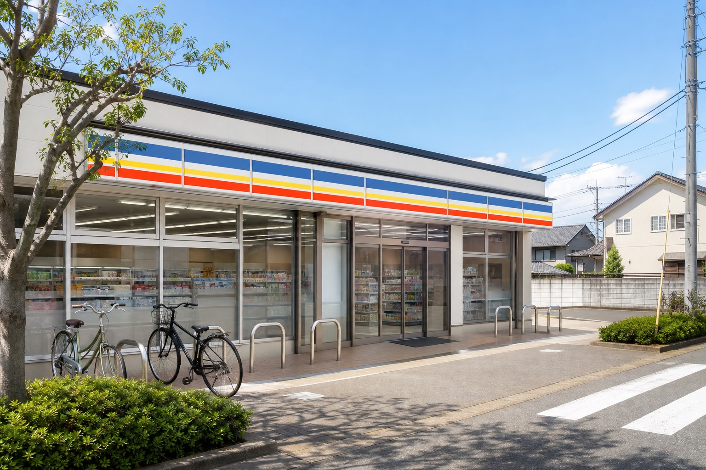

事業領域 01 ｜ CONVENIENCE STORE
地域の毎日を支える、
暮らしの拠点。
コンビニエンスストアは、地域に暮らす人々の毎日に最も近い生活インフラです。日々の買い物にとどまらず、公共料金の支払いや行政サービスの窓口、災害時の物資供給拠点として、地域の安心を支えています。
images/cvs-hero.jpg
店舗外観・地域の街並み（21:9）
店舗外観・地域の街並み（21:9）
事業概要
「行けば、ある」
その安心を、地域に。
グループのコンビニエンスストア事業は、大手チェーンのフランチャイズ加盟店として地域に密着した店舗運営を行っています。標準化されたオペレーションと品質を維持しながら、地域の生活動線や客層に合わせた品揃え・サービスを提供しています。
少子高齢化や過疎化が進む地域においても、生活に欠かせない店舗を維持し続けることは、企業の収益活動であると同時に、地域社会への責任でもあると考えています。
事業の特徴
images/cvs-feature-1.jpg
01
地域に合わせた品揃え
立地や客層に応じて品揃えを最適化。地域の生産者と連携した地場産品の取り扱いにも取り組んでいます。
images/cvs-feature-2.jpg
02
公共・行政サービスの窓口
公共料金の収納、各種チケット、行政証明書の発行など、暮らしに必要な手続きの窓口機能を担います。
images/cvs-feature-3.jpg
03
防災・見守りの拠点
災害時の物資供給や高齢者の見守りなど、地域の安全・安心を支える社会的役割を果たします。
images/cvs-community.jpg

地域への取り組み
店舗を、地域の
セーフティネットに。
高齢者見守り協定
自治体と連携し、日常的な見守り活動に協力しています。
自治体と連携し、日常的な見守り活動に協力しています。
災害時帰宅支援・物資供給
災害発生時の生活物資の供給拠点として機能します。
災害発生時の生活物資の供給拠点として機能します。
地域雇用の創出
地域の幅広い世代に、働く場を提供しています。
地域の幅広い世代に、働く場を提供しています。
運営店舗数
98店舗
1日あたり来店客数
8万人超
店舗スタッフ数
1,600名
24時間営業
365日
※ 数値はすべて仮置きです。確定値に差し替えてください。
この事業を担うグループ会社